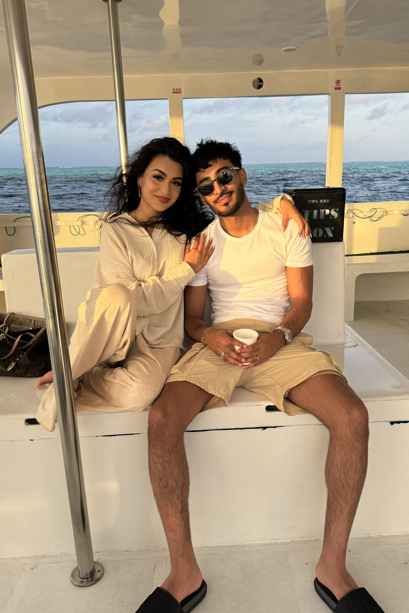
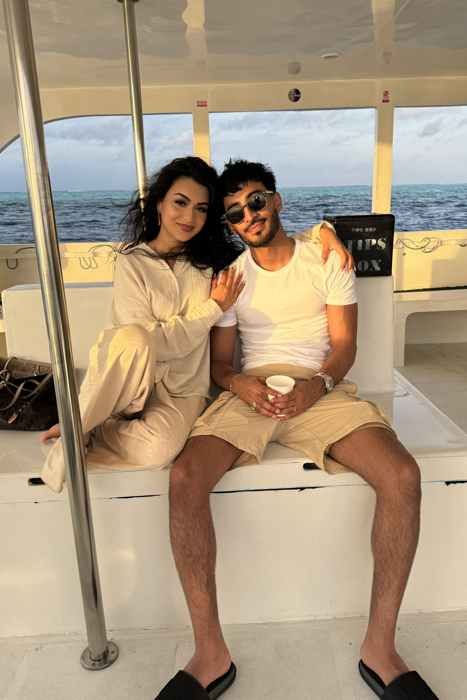

Ali Raza
Bachelors of Computer Engineering & Management @ McMaster University
I build pixel-perfect digital experiences. Passionate about creating innovative solutions and pushing technological boundaries.
Bachelors of Computer Engineering & Management @ McMaster University
I build pixel-perfect digital experiences. Passionate about creating innovative solutions and pushing technological boundaries.
 

Hi, I'm Ali Raza—a Toronto-based engineering student with a relentless desire to improve, and a deep passion for technological innovation. My entrepreneurial spirit drives me to explore new ways to leverage tech to make a meaningful impact. I truly believe I can change the world. My personality is curious - I love to learn. I will forever be a student of my craft. This site will highlight my progression as a young professional.
To pursue my aspirations, I've been honing a non-traditional set of skills. I have a passion for building technology, and I thoroughly enjoy practicing sales. I think the ability to sell is fundamental to general human interaction, the workplace especially. Through my experiences, I've found great success in commission-based sales roles @ GoSales, and The Rec Source. I've also spent an immeasurable amount of time expanding my technical prowess through projects, school, and experiences. My time @ Septodont and Vanguard Financial has taught me how to work with new technologies/languages, and continuously adapt to industry trends. I'm currently working on Payroll by Vanguard Financial. The goal is to create the ultimate payroll processing/helper software for accountant/client interfacing. More details can be found in the project section, along with some other pretty awesome work.
General fun facts about me: I'm a top 0.2% Rocket League player, I'm a web3 enthusiast, I love working out, playing soccer, travelling the world & so much more.
Follow my journey. My socials can be found below, or top right - feel free to message me about insights/opportunities or just to chat. Humans are social beings after all.
Septodont Internship January 2025 - Present Cambridge, Ontario, Canada Hybrid
Vanguard Financial Internship May 2023 - Aug 2023 Mississauga, Ontario, Canada Hybrid
The Rec Source Contract Part-time Jun 2022 - Dec 2022 GTA, Ontario, Canada Hybrid
GoSales Contract Full-time Apr 2022 - Aug 2022 GTA, Ontario, Canada On-site
Student Works Contract Part-time Dec 2021 - Mar 2022 GTA, Ontario, Canada On-site
Puma Permanent Part-time Oct 2017 - Jan 2019 Milton, Ontario, Canada On-site
Payroll Processing System is a full-stack application designed to streamline payroll management for Vanguard Financial. The system facilitates seamless interaction between accountants and clients, offering separate login systems, API routes, and query permissions tailored to each user role.
Key highlights include:
This project demonstrates my expertise in backend development, database design, and secure system architecture, with a focus on creating scalable and efficient solutions for financial operations.
I'm excited to continue developing this system, as it represents a significant step forward in modernizing payroll processing for small to medium-sized businesses.
View on GitHubFranky is an AI-powered bot for Rocket League, developed using Python and RLGym. Leveraging deep reinforcement learning, Franky adapts to high-level gameplay with real-time decision-making and dynamic in-game responses.
Key highlights include:
This project demonstrates expertise in AI systems and game development, blending advanced engineering with a deep understanding of Rocket League (top 0.3% worldwide btw).
I'm really excited about the future of AI and game development – Franky is my way of learning and contributing to this evolving field. @epicgames, I hope you're watching!
Private RepositoryDeveloped a software-defined radio (SDR) system for FM and RDS decoding within a Unix environment, leveraging pipelines for efficient data flow between processing stages. We implemented advanced DSP algorithms in C++ for real-time mono and stereo FM demodulation, incorporating multithreading to optimize and meet real-time constraints. Utilized Python for system validation and performance analysis, showcasing proficiency in cross-language development within the Linux ecosystem.
View on GitHubThis is a hardware-based image decompression system using Verilog on an Altera DE2-115 FPGA. Using Verilog state design, we developed logic for YUV to RGB data conversion, optimized memory management across a SRAM and two dual-port RAMs, and integrated UART communication for data transmission. The system interfaces with a VGA controller for real-time display, all while staying within extremely strict resource and time constraints. This project demonstrates my experience in digital design, memory optimization, and real-time image processing techniques.
View on GitHubIn this project, I engineered a real-time 3D spatial mapping system, integrating a VL531X time-of-flight sensor, 28BYJ-48 stepper motor, and MSP432E401Y microcontroller. I2C and UART protocols were used for data transmission from sensor, to microcontroller, to PC. Python and the Open3D API are then used to transform the raw distance data into a dynamic 3D point cloud visualization, with the ability map any enclosed space. This project demonstrates my abilities in embedded systems design, sensor integration, communication protocols, and real-time 3D data processing.
Private RepositoryCollaborated with a partner to create a charity, Kinship Canada. This is a custom payment processing system compliant with Canada Revenue Agency (CRA) regulations. This was my first deep dive into full-stack development. Using TypeScript and Node.js, we've created a scalable solution that efficiently handles transactions, tracks donations, and manages donor information. Using Stripe, we managed financial operations and enhanced donor management capabilities. This project showcases my learning in full-stack development, regulatory compliance implementation, and effective teamwork.
Visit Website Private RepositoryThis project showcases a pacemaker simulation model using MATLAB and Simulink, integrating advanced algorithms for atrial and ventricular pacing and sensing across multiple operational modes. The system is packaged with a custom-built graphical user interface (GUI) developed in Python using Tkinter, enabling real-time user interaction and control. This project showcases my ability in bridging backend simulations with user-friendly frontend interfaces, model-based design, and cross-platform software integration.
View on GitHubFeel free to reach out :).